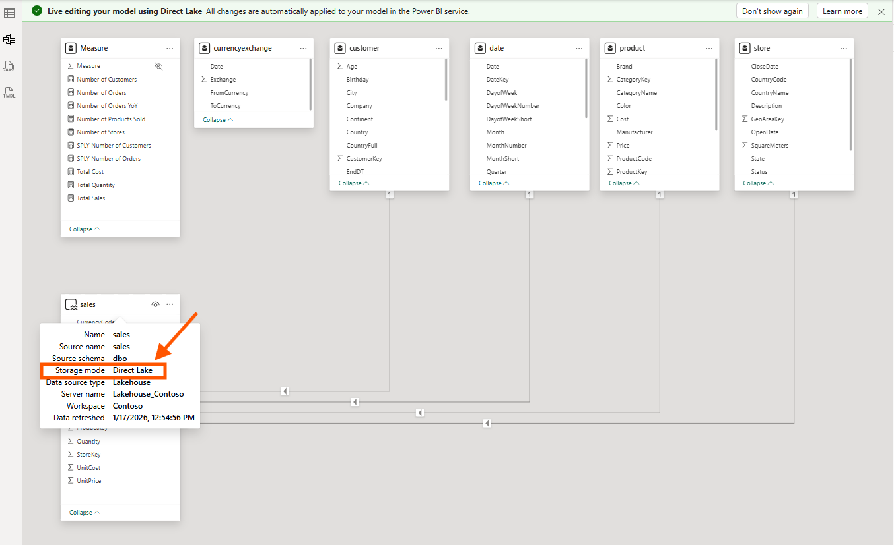
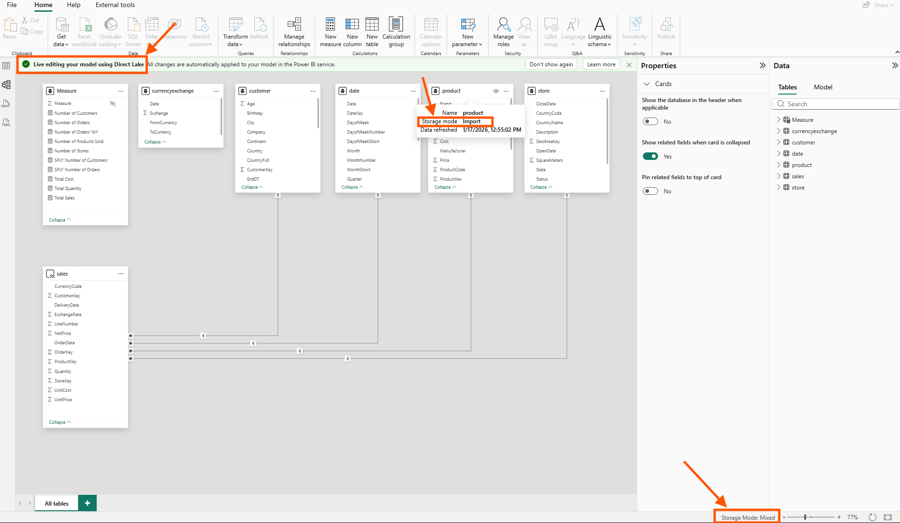
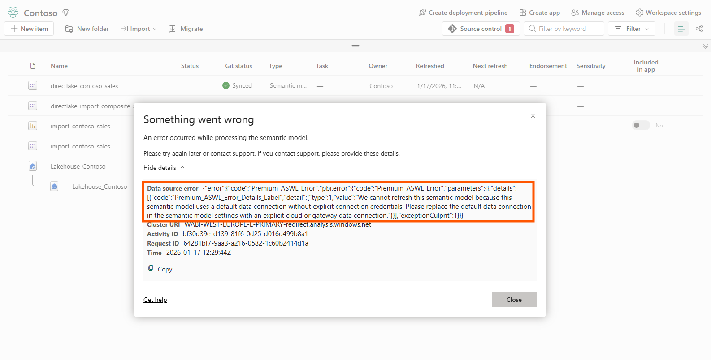
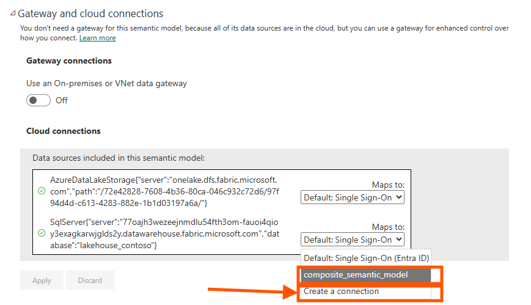
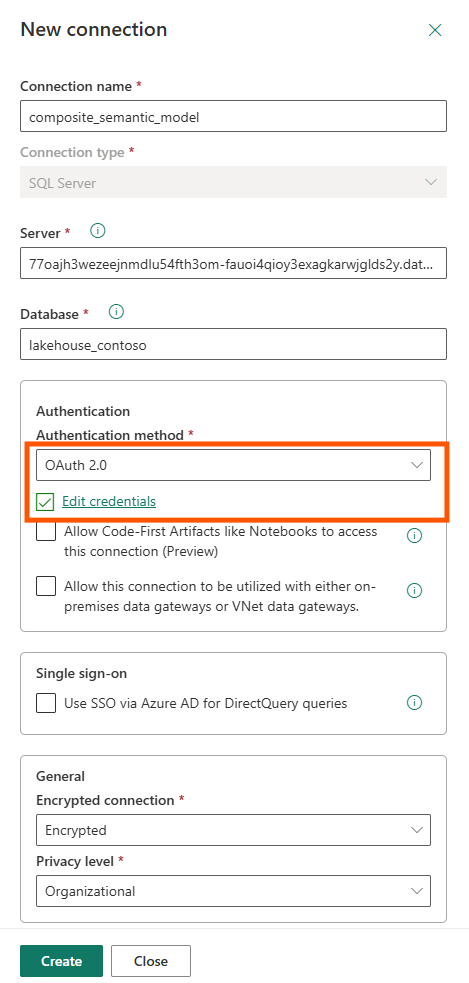
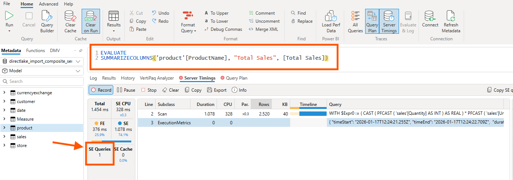
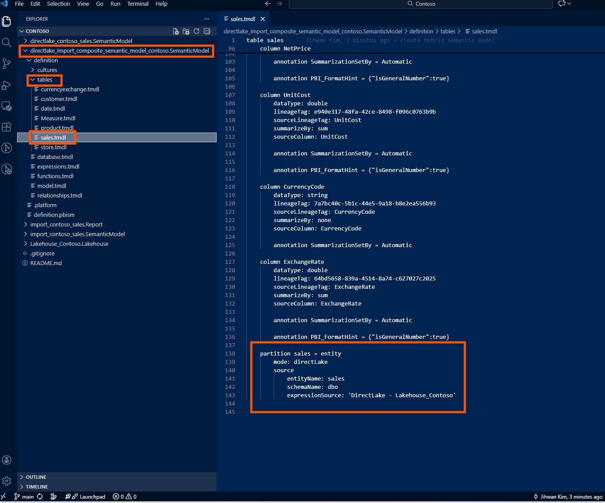
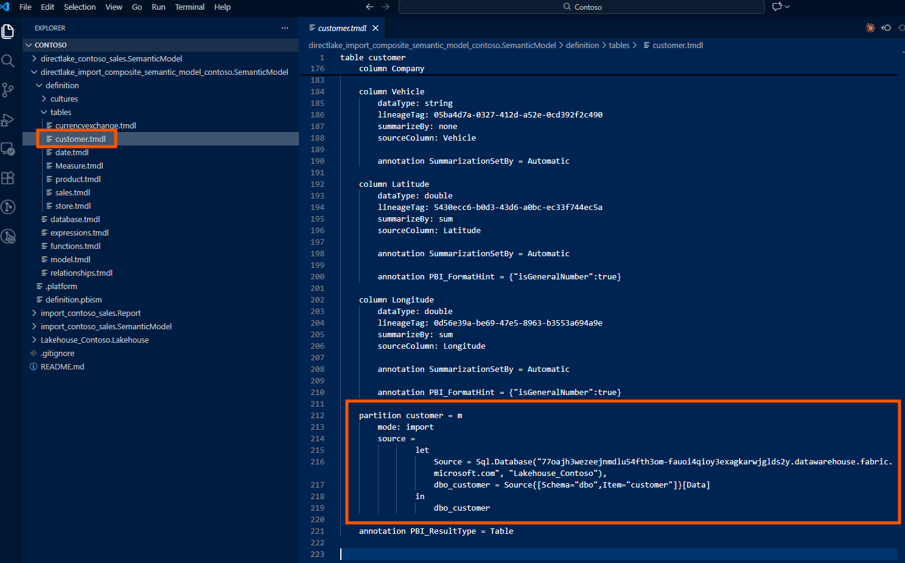
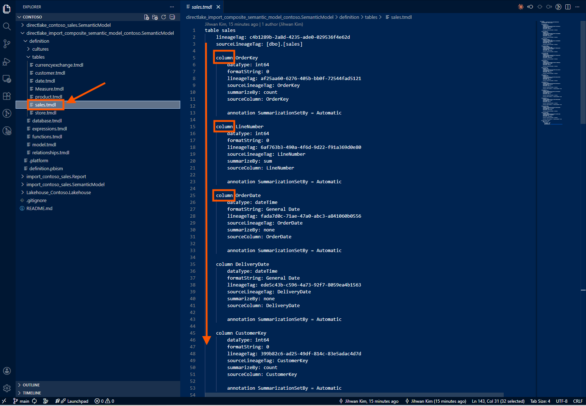
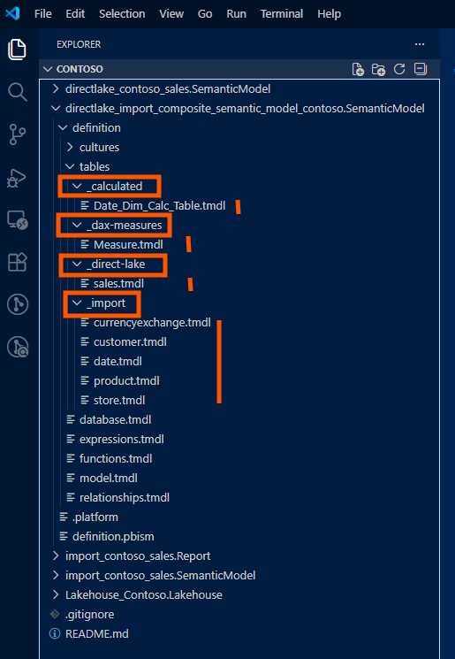

In this writing, I want to share my journey exploring hybrid semantic models—the new composite model pattern that combines Direct Lake and Import mode tables inside a single semantic model. This feature was described in mid or late 2025 Use composite models in Power BI, and after experimenting with it hands-on, I discovered both its power and its hidden friction points.
If you've been following the Direct Lake story, you know the promise: near-Import performance without the refresh overhead for massive fact tables. But you also know the limitations—no calculated columns, no user hierarchies for Excel consumption, no Power Query transformations inside the model. The hybrid pattern finally lets us split the model sensibly: big facts stay in Direct Lake, nimble dimensions come in as Import tables with full modeling flexibility. No more choosing between performance and features.
What I didn't expect was the gateway configuration step that blocked my first deployment. That's the story I want to share.
1. The Step-by-Step Workflow I Followed
Here's the exact workflow I used to create my first hybrid semantic model:
- I started with an existing Import mode semantic model containing both fact and dimension tables.
- I created a new Direct Lake mode semantic model in my Fabric workspace, selecting only the fact table from my Lakehouse.
- I connected to this Direct Lake model via Tabular Editor 3.
- I opened my original Import mode semantic model in a second instance of Tabular Editor 3.
- I copied everything from the Import model—dimension tables, expressions, measures, relationships, DAX UDFs—except the fact table, and pasted them into the Direct Lake model.
- Now I had a hybrid semantic model: fact table in Direct Lake, dimension tables in Import mode.

The screenshot above shows the sales table with Storage mode: Direct Lake, while the dimension tables (customer, product, date, store) are in Import mode. Notice the tooltip confirming the Direct Lake configuration: Data source type is Lakehouse, Server name is Lakehouse_Contoso.

In Power BI Desktop's live editing mode, I can see the mixed storage modes clearly. The product table shows Storage mode: Import, and at the bottom right, the status bar confirms Storage Mode: Mixed—proof that this is now a true hybrid model.
This workflow works. But the next step is where I got stuck.
2. The Gateway Credential Gotcha
Before refreshing this hybrid model in the Power BI Service, I discovered that gateway settings for the imported tables have to be configured separately—and the error message says like below.

The error reads: "We cannot refresh this semantic model because this semantic model uses a default data connection without explicit connection credentials. Please replace the default data connection in the semantic model settings with an explicit cloud or gateway data connection."
Here's what happens: Direct Lake tables authenticate via my Fabric workspace identity. No gateway needed; the model reads directly from OneLake. But Import tables still need a data source connection configured in the Power BI Service. When I paste Import tables into a Direct Lake model via Tabular Editor, the service has no idea how to refresh those tables. The refresh simply fails.
The fix is to navigate to "Manage connections and gateways" in the Power BI Service and manually create or map a connection for the data source my Import tables reference.

In the Gateway and cloud connections settings, I see two data sources: the AzureDataLakeStorage connection for the Direct Lake tables (which works automatically), and the SqlServer connection for the Import tables (which needs explicit mapping). Select the dropdown for the SQL Server connection and either choose an existing connection or create a new one.

When creating a new connection, configure OAuth 2.0 authentication and click "Edit credentials" to authenticate. Only after this binding is complete will the refresh succeed.
This was the key aha moment: the hybrid model pattern shifts credential management from "invisible" (pure Direct Lake) to "explicit configuration required" (Import tables need connection binding). The Microsoft documentation mentions that Import tables can be added, but it doesn't explain this credential flow clearly. Marco Russo's video shows how to solve this.
3. Proving There's No Model Boundary Tax
Once the credentials were configured and the refresh succeeded, I wanted to verify that the hybrid model actually behaves as a single unified model—not two models stitched together with limited relationships.
The proof is in DAX Studio's Server Timings. I ran a simple query that crosses from the Direct Lake fact table (sales) to an Import dimension table (product):

The query SUMMARIZECOLUMNS('product'[ProductName], "Total Sales", [Total Sales]) joins data across storage modes. The critical number is SE Queries: 1. A single Storage Engine query means VertiPaq treated both tables as part of the same "continent"—no filter lists being passed between separate models, no multiple round trips.
If this were the old composite model pattern with limited relationships, I'd see multiple SE queries and significantly worse performance. The single SE query confirms there's no model boundary tax.
From a DevOps standpoint, this is foundational. A single semantic model means a single deployment artifact, and a single Git repository. No more coordinating deployments across two models with cross-model dependencies.
4. How Hybrid Models Look in TMDL
When I store a hybrid model in Git using the PBIP format, the TMDL structure reveals how different Import and Direct Lake partitions are under the hood.
A Direct Lake partition references an entity in OneLake:
partition sales = entity
mode: directLake
source
entityName: sales
schemaName: dbo
expressionSource: 'DirectLake - Lakehouse_Contoso'
An Import partition contains an M expression and references a data source:
partition customer = m
mode: import
source =
let
Source = Sql.Database("77oajh3wezeejnmdlu54fth3om-fauoi4qioy3exagkarwjglds2y.datawarehouse.fabric.microsoft.com", "Lakehouse_Contoso"),
dbo_customer = Source{[Schema="dbo",Item="customer"]}[Data]
in
dbo_customer
When I look at the TMDL files in my Git repository, Direct Lake and Import partitions store fundamentally different things.
A Direct Lake partition is essentially a pointer. It says: "Go to OneLake, find this entity named sales in the dbo schema, and read the data directly from the Delta files." That's it. There's no transformation logic, no filtering, no column renaming—just a reference. The actual data processing happened upstream in my Lakehouse, managed by the data engineering pipeline.
An Import partition is different. It contains the complete Power Query (M) expression—every step of the data transformation journey. It might say: "Connect to this SQL Server, authenticate with these credentials, navigate to this database, select this table, filter rows where Status equals 'Active', rename the CustomerID column to CustomerKey, change this column's data type, and then load the result." All of that logic lives inside the TMDL file.
This distinction has real consequences for version control and code reviews.
When someone modifies a Direct Lake table—say, adding a new column—the Git diff is minimal and easy to review. I'll see a few lines added for the new column definition: its name, data type, maybe a description. The change is self-contained and obvious.

When someone modifies an Import table, the Git diff shows M expression changes. These can be complex: nested let statements, multiple transformation steps, function calls. Reviewing a PR that modifies Import table logic requires understanding Power Query, not just reading metadata. It's a different level of cognitive load.
For hybrid models, this means my PR reviews will have two flavors: simple schema diffs for Direct Lake tables, and logic diffs for Import tables. Knowing which is which—by organizing my folder structure or using clear naming conventions—helps reviewers understand what they're looking at.
5. Git Folder Structure for Multi-Source Hybrid Models
When Import tables come from a different source than the Lakehouse, I recommend organizing the PBIP folder structure to make the separation explicit. Here's the pattern I've adopted:
/HybridModel.SemanticModel/
├── definition/
│ ├── database.tmdl
│ ├── model.tmdl
│ ├── relationships.tmdl
│ ├── tables/
│ │ ├── _direct-lake/
│ │ │ ├── FactSales.tmdl
│ │ │ ├── FactInventory.tmdl
│ │ │ └── FactPurchases.tmdl
│ │ ├── _import/
│ │ │ ├── DimCustomer.tmdl
│ │ │ ├── DimProduct.tmdl
│ │ │ ├── DimDate.tmdl
│ │ │ └── DimStore.tmdl
│ │ └── _calculated/
│ │ └── DateTable.tmdl
│ ├── expressions/
│ │ └── DataSources.tmdl
│ └── roles/
│ └── Security.tmdl
├── diagramLayout.json
└── .platformThe _direct-lake, _import, and _calculated subfolders aren't required by the PBIP spec—TMDL doesn't care about folder hierarchy within tables/. But for human readability and PR reviews, this separation makes it immediately clear which tables have which storage mode. When a teammate modifies an Import table's M expression, the diff appears under _import/, and reviewers know to check for credential implications.

Closing Thoughts
The hybrid semantic model pattern is the pragmatic middle ground I've been waiting for. Big facts stay in Direct Lake with zero refresh overhead; dimensions come in as Import tables with full modeling flexibility. The "model boundary tax" of the old composite pattern is gone.
But the tooling isn't fully baked yet. GUI support is limited—I still need Tabular Editor or Semantic Link Labs to add Import tables. And the documentation doesn't clearly explain the authentication difference between Direct Lake and Import tables. If you know where I can find better documentation on this, please let me know!
I hope this helps having fun in exploring hybrid semantic models and embracing this new era of flexible, enterprise-ready Fabric architectures!